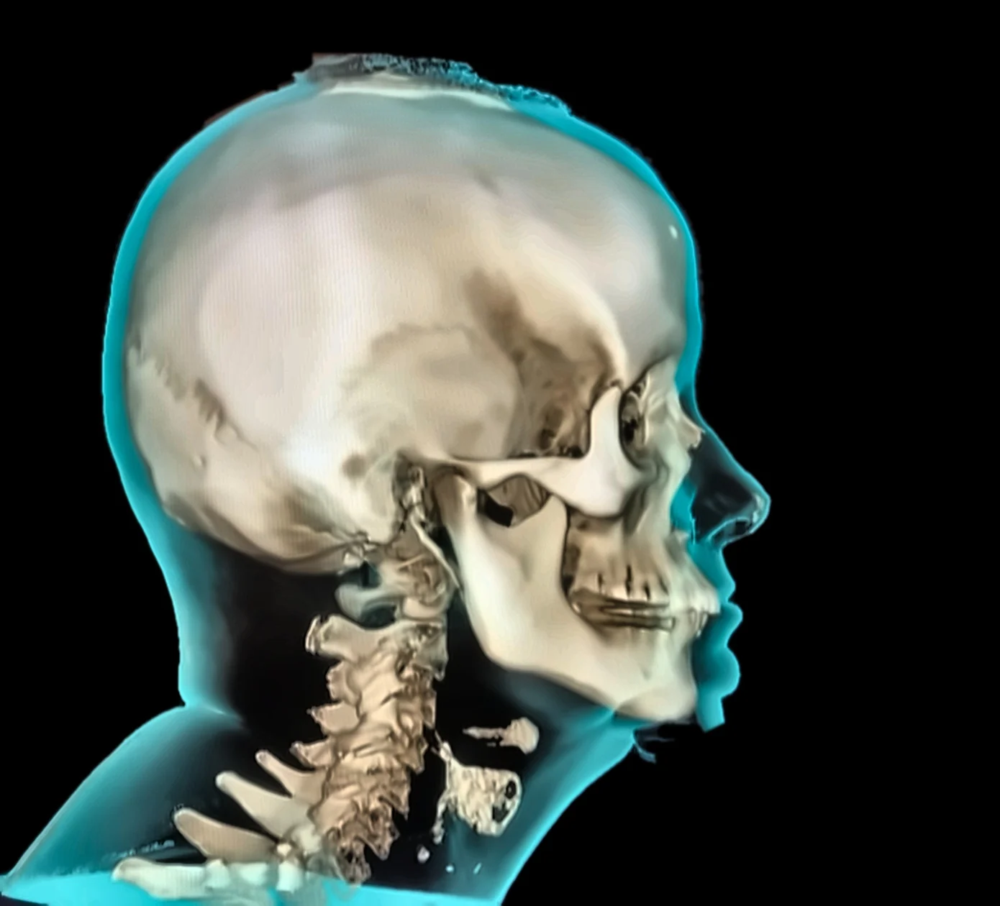
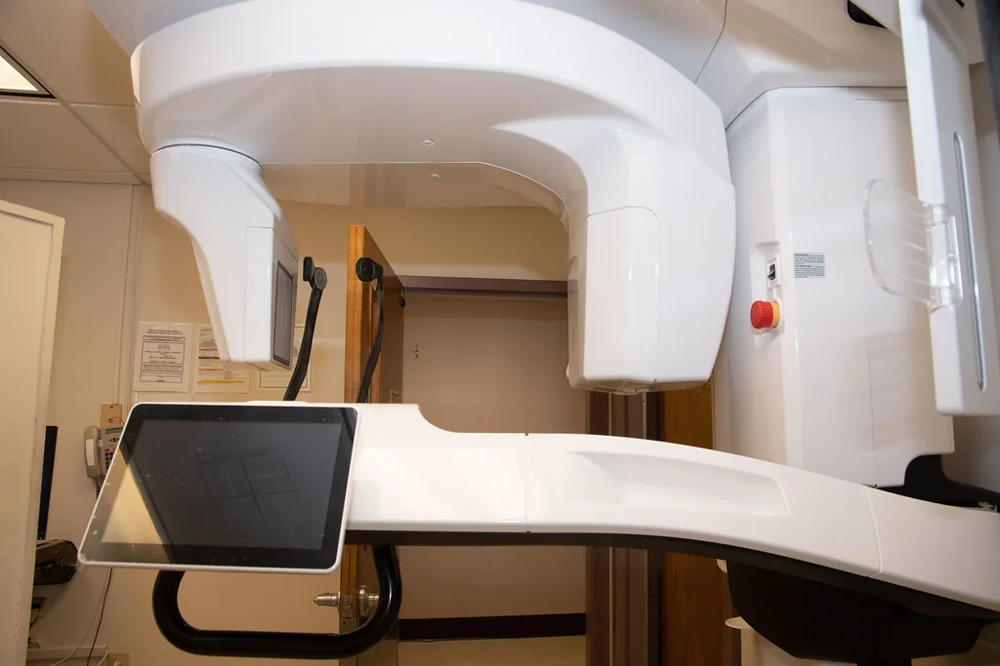

Back to techniques
Technique
Orthospinology
Precision care for the nervous system — advanced imaging and precise measurements of the upper neck, and gentle, individualized corrections.
Technique
Precision care for the nervous system — advanced imaging and precise measurements of the upper neck, and gentle, individualized corrections.
Your brain and body communicate through the nervous system, and the upper cervical spine plays a critical role in that connection. Orthospinology is a specialized chiropractic approach that uses advanced imaging and precise measurements to identify subtle misalignments of the upper neck and deliver gentle, individualized corrections designed to support optimal nervous system function.

Unlike traditional chiropractic techniques, Orthospinology does not rely on twisting, cracking, or forceful adjustments. Using a highly specific analysis and correction process, care is tailored to your unique anatomy — making it comfortable for patients of all ages, including those who prefer a gentler approach, are pregnant, or feel anxious about traditional chiropractic care.
The goal is simple: reduce interference within the nervous system, support proper communication between the brain and body, and help you move, feel, and function at your best.
“For upper cervical care, I incorporate Orthospinology and the KH‑2 instrument. When clinically appropriate and supported by imaging, this specialized approach focuses on the relationship between the upper neck, nervous system function, and overall health.”

For upper cervical care she incorporates Orthospinology and the KH‑2 instrument, when clinically appropriate and supported by imaging. The Activator Method® remains the primary technique for full‑spine care.
She frequently works with individuals seeking support for complex health challenges, including conditions that may involve autonomic nervous system dysfunction.
Precision. Purpose. Results.
A gentle approach to helping your body function the way it was designed to.
Book a visit and she’ll come to you — in Gaffney, Spartanburg, Greenville and nearby Upstate towns.